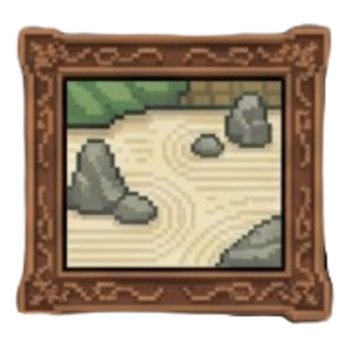
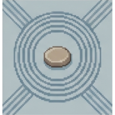
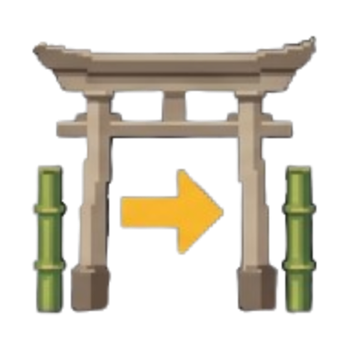
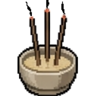

Choose your path
Game Modes

Garden Run
Five floors, a boss on each, gold, items and relics.
Harmony IV of IV

Endless Zen
One 9×9 after another until your HP runs out.
Best depth 14
Spirit Trials
One timed puzzle under rising pressure.
Adept · best 4,210

Daily Walk
Two floors, the same for everyone today.
Not walked · streak 4
Monthly Walk
The month's seeded garden, one score.
Old Tree Grove · 12 days

Incense Walk
A burning stick for a clock; it ends at 0:00.
Best 2,840 · 11 puzzles
DAILY WALK · SATURDAY 25 OCTOBERToday's garden: two floors
Two floors and their bosses, the same seed for everyone. No class: everyone walks with the same HP, pencil and bag.
The XP goes to a class you choose at the end. One scored walk a day.
Goals: ✓ Solve a puzzle without pencil · ○ No mistake on a boss · ○ Finish with 3 HP or more
STREAK · INK STAMPSDay 4: +10 % XP (day 7: +25 %)
Ink stamps 9 · Stamp shop
TODAY'S BOARDYou: not walked · 132 walkers · best 1,912
Back Stamp shop Walk today's garden
INCENSE WALK · TIME ATTACKThe stick burns: 8:00 to start
Solve puzzle after puzzle. Each solved puzzle adds time (5×5 +1:00 up to 9×9 +3:30, +0:15 a star);
each mistake costs 0:10 and a fifth of the puzzle's bonus. At 0:00 the walk ends, also in the middle of a puzzle.
RECORDSBest score 2,840 · most puzzles 11 · largest board 8×8
THIS WEEK'S BOARDWeek 43 seed · you 17th of 96
Back Practice (random seed) Choose a class
D-pad chooses a path · A enters · Y stamp shop · B back
Game Modes · Proposal · Six paths (the Incense Walk joins; the Daily Walk starts its two floors)